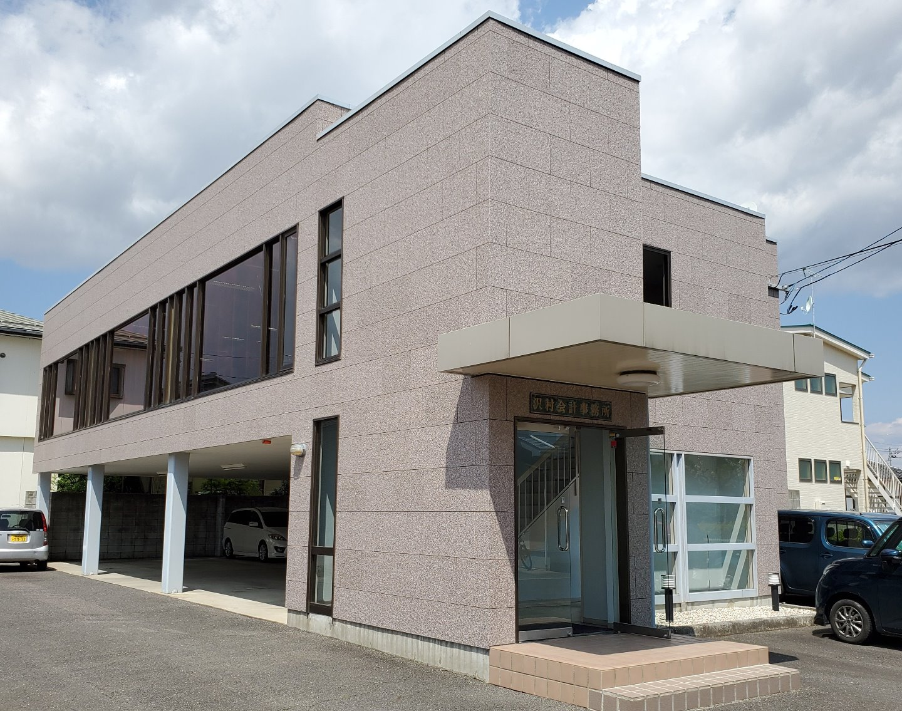

正しい会計帳簿を作成することは経営の基本です。法令に完全準拠した会計帳簿は、法人税や消費税などの適正な申告に役立つだけでなく、会社の社会的信用を築く大前提となります。
About

ＴＫＣ全国会は、租税正義の実現をめざし関与先企業の永続的繁栄に奉仕するわが国最大級の職業会計人集団です。
東北税理士会所属
| 事務所名 | 澤村正夫税理士事務所 |
|---|---|
| 所在地 | 福島県郡山市土瓜１－１９５－２ |
| 電話番号 | 024-961-3200 |
| FAX番号 | 024-961-3828 |
| 業務内容 |
|
Greeting
私は平成２年に税理士事務所を開設してから今日まで、多方面の顧問先のお客様と信頼の絆を築いていくことを重点においてきました。
税務、会計はもちろん他の些細なことでもお悩みごとがございましたらお気軽に当事務所までご相談下さい。
当事務所では、お金の計算（税金の計算も含め）を仕事としておりますが、人生の目的の大きな一つはそれぞれが幸せになる事だと思います。
仕事柄、相続での身内同士の争いなどを目当りにすると、お金で幸せになれないと感じます。しかし、お金がないために不幸になる方もいる、これも事実です。
当事務所では、数字（お金）を計算するのが仕事ですが、それゆえに「金を残すは下、事業を残すは中、人を残すは上」の言葉を頭の片隅にいつも置いて、仕事に取り組んでいます。
Philosophy
昔なら決算申告書を作成するだけでも良かったのかも知れません。しかし、経営環境が日々変化するようになった現在では、決算申告書を作成するということだけでなく、「会計を通じて企業経営の支援」をさせていただくことが会計事務所の重要な役割であると考えます。会計や税務はもちろん、お客様の良きパートナーとしてサービスを提供させて頂くことが目標です。
ＴＫＣ全国会の基本理念である「自利利他」について、ＴＫＣ全国会創設者飯塚毅は次のように述べています。
大乗仏教の経論には「自利利他」の語が実に頻繁に登場する。解釈にも諸説がある。その中で私は「自利とは利他をいう」（最澄伝教大師伝）と解するのが最も正しいと信ずる。
仏教哲学の精髄は「相即の論理」である。般若心経は「色即是空」と説くが、それは「色」を滅して「空」に至るのではなく、「色そのままに空」であるという真理を表現している。
同様に「自利とは利他をいう」とは、「利他」のまっただ中で「自利」を覚知すること、すなわち「自利即利他」の意味である。他の説のごとく「自利と、利他と」といった並列の関係ではない。
そう解すれば自利の「自」は、単に想念としての自己を指すものではないことが分かるだろう。それは己の主体、すなわち主人公である。
また、利他の「他」もただ他者の意ではない。己の五体はもちろん、眼耳鼻舌身意の「意」さえ含む一切の客体をいう。
世のため人のため、つまり会計人なら、職員や関与先、社会のために精進努力の生活に徹すること、それがそのまま自利すなわち本当の自分の喜びであり幸福なのだ。
そのような心境に立ち至り、かかる本物の人物となって社会と大衆に奉仕することができれば、人は心からの生き甲斐を感じるはずである。
毎月、会計専門家が貴社を訪問し、次の業務を支援します。
Services
会計業務・税務申告だけが税理士業務では有りません。
会社発展の全てをサポートするのが澤村正夫税理士事務所です！何でもご遠慮なくご相談ください。
原則、毎月1回訪問し、記帳指導をさせて頂きます。会計ソフトの導入を検討しておられる場合には、選定から操作指導に至るまで丁寧にアドバイスさせて頂きます。
現金出納帳、伝票、給与台帳などの資料をお客様の方で作成していただき、当社で会計ソフトへ入力し、仕訳日記帳、月次試算表、総勘定元帳、貸借対照表、損益計算書などの書類を作成いたします。
当方のスタッフもご一緒させていただき、本来支払うべき税金以上に請求されることがないよう、また、問題を指摘された場合の調整代行をいたします。
決算指導及び、税務署、都道府県、市町村提出用の各種申告書を作成いたします。
Career & Affiliations
Contact